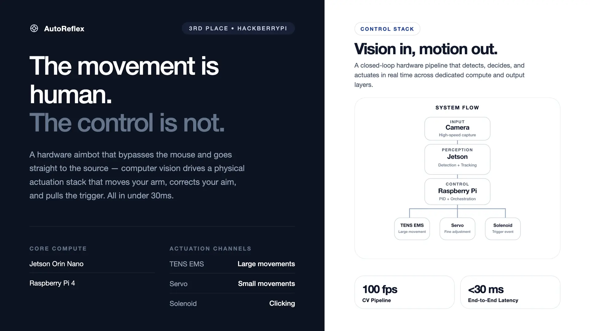
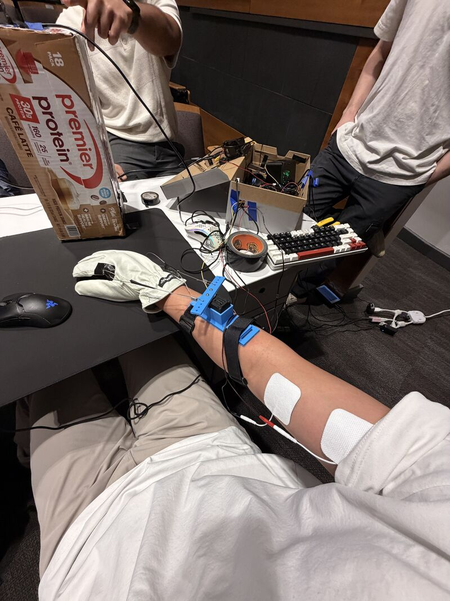
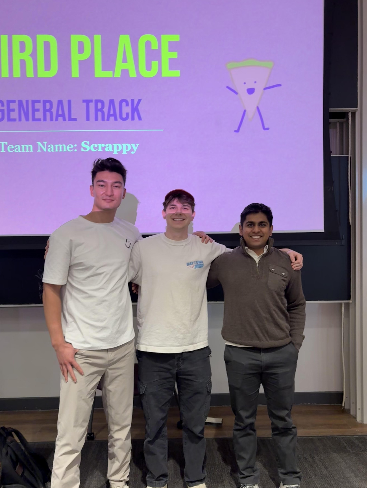

Jetson Orin Nano + global shutter camera + EMS actuators. Dual-mode PID controller running at 1kHz and SPI digital potentiometers for precise muscle stimulation control, achieving a 15ms pixel-to-stimulation response time.
physical setup


system schematic
the problem
Aim assist in competitive games is almost always software-only — applied inside the rendering pipeline and trivially detectable. We wanted to answer a different question: what does a hardware-level aim-assist look like, operating entirely outside the game process at the level of physical muscle stimulation and mechanical actuation?
architecture
Two nodes communicate over a direct Ethernet link. The Jetson Nano runs the vision pipeline at 100fps and streams 20-byte UDP packets to the Raspberry Pi, which runs a 1kHz PID loop driving the servo, solenoid trigger, and TENS unit.
┌──────────────────────┐ UDP (20 bytes) ┌──────────────────────────────┐
│ JETSON NANO │ ────────────────────────► │ RASPBERRY PI │
│ │ timestamp|tx|cx|blob_w │ │
│ Arducam OV9782 │ │ 1kHz PID Loop │
│ 100fps MJPEG │ │ │
│ HSV / YOLO11n │ │ ST3215 Servo (UART 1Mbps) │
│ │ │ Solenoid Trigger (GPIO) │
│ │ │ TENS EMS (SPI/MCP4131) │
└──────────────────────┘ └──────────────────────────────┘
10.0.0.1 10.0.0.2
how it works
The Arducam OV9782 streams 1280×720 MJPEG at 100fps. Pre-allocated numpy buffers eliminate per-frame heap allocation. Detection runs in two modes: HSV thresholding for Aimlabs cyan targets (~2ms/frame) and YOLO11n for Valorant enemy detection, quantized for Jetson inference.
The Raspberry Pi runs a 1kHz busy-spin loop (<5µs jitter) with a two-state controller. All thresholds and gains scale dynamically with target size (blob_w) — tighter for distant targets, more aggressive for close ones.
| State | Condition | Controller | Purpose |
|---|---|---|---|
| FLICK | |error| > 30px | PD (Kp=3.0) | Fast ballistic move toward target |
| SETTLE | |error| < 30px | PID (Kp=3.0, Ki=0.15) | Precision lock with integral action |
| FIRE | |error| < 5px | Solenoid pulse | Target acquired — click |
Two MCP4131 digital potentiometers over SPI modulate TENS electrode intensity proportional to pixel error — electrically redirecting the arm (~1ms) before the servo completes its mechanical slew (~10ms), giving a two-channel correction with different response speeds.
latency budget
| Stage | Time | Notes |
|---|---|---|
| Camera capture | ~10ms | 100fps MJPEG, hardware-timed |
| HSV detection | ~2ms | Pre-allocated buffers, no malloc |
| UDP transit | <1ms | Direct Ethernet, no routing |
| PID compute | <1µs | All stack, no heap |
| Servo write | ~9µs | 9 bytes @ 1 Mbps |
| End-to-end | ~13ms | Pixel to servo movement |
hardware
| Component | Role | Interface |
|---|---|---|
| NVIDIA Jetson Nano | Vision processing (HSV/YOLO) | USB (camera), Ethernet (UDP) |
| Arducam OV9782 | 100fps global shutter camera | USB 2.0 (MJPEG) |
| Raspberry Pi 4 | Real-time servo control | Ethernet, UART, GPIO, SPI |
| Feetech ST3215 | 12-bit digital servo (4096 steps/360°) | Half-duplex UART @ 1 Mbps |
| Solenoid | Mouse click actuator | GPIO via MOSFET driver |
| MCP4131 ×2 | Digital potentiometer (TENS intensity) | SPI (CE0 + CE1) |
| TENS unit | Transcutaneous electrical stimulation | Modulated by MCP4131 |
challenges & solutions
blob_w linearizes response across ranges.outcome
AutoReflex placed 3rd at HackberryPi. It demonstrates that hardware-level aim assist — operating entirely outside the game process — is viable at latencies competitive with human reaction time. The Jetson-to-Pi UDP architecture, PID state machine, and TENS integration pattern generalizes to any real-time physical control problem: robotics, prosthetics, or closed-loop rehabilitation.
links